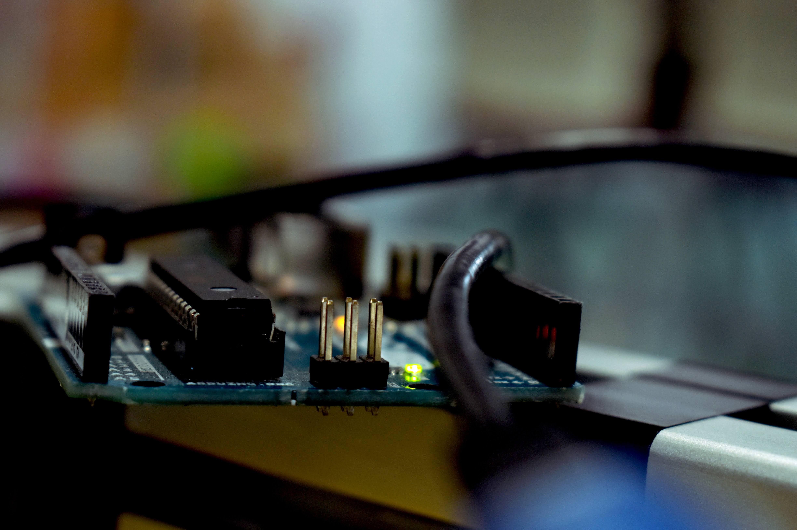
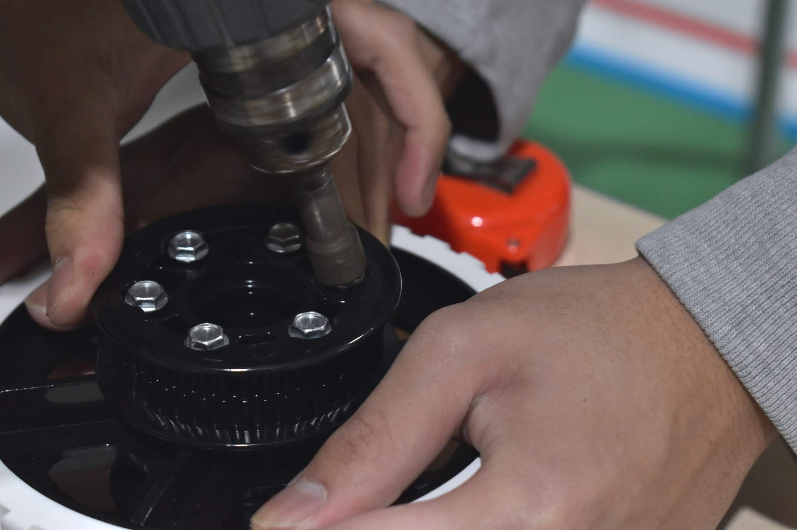

01FIRST Robotics Competitionとは？
FRC（FIRST Robotic Competition）は15〜18歳の学生を対象としている国際ロボットコンテストです。全世界27ヶ国以上から、約9万5000人の学生が参加しています。
毎年1月に大会のテーマが発表され、全てのチームが一斉に製作を開始します。また、大会までの期間が短く約6週間でロボットの製作を行います。
現状、FRCではまだ日本での大会運営が実現されていないため、ハワイの大会に出場しています。
02FRCで製作するロボット
ロボットについて
FRCでは、毎年1月4日に大会のテーマ・競技ルールが発表されます。
その後、大会までの6週間の間になんと全長約1メートル、重量約50kgほどの大型ロボットを設計からプログラミングまで全て中高生が製作します！

